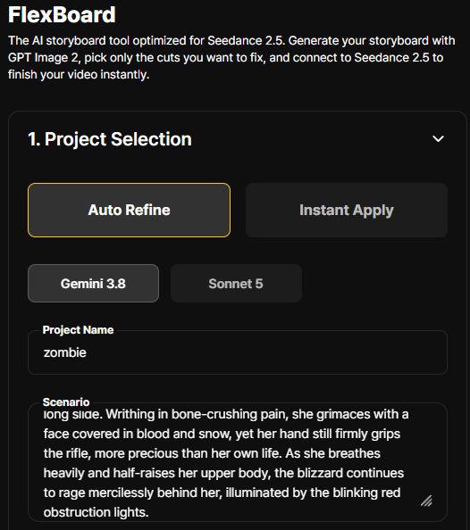
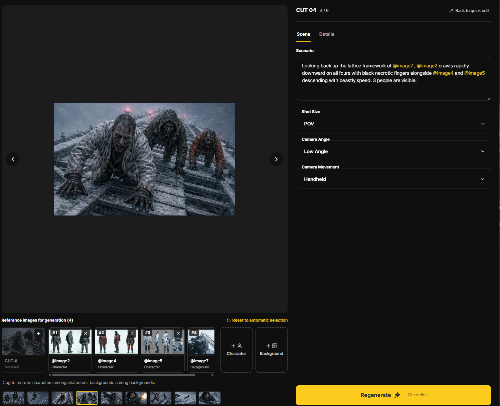

Storyboard 도구에서 FlexBoard 열기
Storyboard 카테고리에서 Flex Board를 선택해 새 프로젝트를 시작합니다.
Xconda 왼쪽 사이드바에서 Storyboard 를 열면 도구 목록에 Flex Board 카드가 보입니다.
“Seedance 2.5에 최적화된 Storyboard 도구”라고 표시된 Flex Board 카드를 선택합니다.
워크스페이스에서 New Project 를 선택해 새 프로젝트를 만들고 Project Selection 패널을 엽니다.


먼저 이야기를 어떤 방식으로 해석할지 정합니다
Project Selection에서 모드, 모델, 프로젝트 이름을 설정합니다.
Auto Refine 은 아이디어를 다듬어 컷으로 나누고, Instant Apply 는 이미 정리된 시나리오를 빠르게 적용할 때 사용합니다.
Gemini 3.8 / Sonnet 5 중에서 선택할 수 있는 텍스트 생성 모델입니다. 프로젝트 안에서 모델을 바꾸면 컷 설명의 어조가 달라질 수 있습니다.
Project Name에 작업을 식별할 이름을 입력합니다. 프로젝트 목록에서 찾기 쉬운 제목을 고르세요.

무슨 일이 일어나고 어떤 느낌이어야 하는지 정합니다
장면 텍스트, 장르, 분위기를 설정해 스토리보드의 방향을 잡습니다.
Scenario에 배경, 캐릭터, 행동, 감정 상태를 설명하는 문장을 씁니다. 여러 사건을 순서대로 나열합니다.
Genre 로 이야기의 장르를 지정합니다. 화면 예시는 Suspense.
Tone / Mood 로 장면의 감정적 톤을 설정합니다. 화면 예시는 Tense.
Save project를 선택하면, 입력한 프로젝트 설정이 저장됩니다. 다음 단계에서는 참조 이미지와 패널 레이아웃을 다듬습니다.


같은 피사체를 컷마다 추적하기
캐릭터와 반복 등장 피사체의 이미지를 카드로 등록하고 @imageN 토큰으로 관리합니다.
Add Cast 버튼은 캐릭터나 반복 등장 피사체를 추가합니다. 각 카드에는 @image1, @image2….
각 카드에 이미지와 알아보기 쉬운 이름을 붙입니다(예: Protagonist, Zombie 1). 컷 시나리오에서는 토큰과 이름으로 피사체를 식별합니다.
캐릭터마다 카드를 따로 등록하세요. 카드를 바꾸거나 삭제한 뒤에는 토큰과 컷 텍스트가 의도와 맞는지 확인합니다.
Cast & Face Lock
이 섹션에서는 캐릭터와 오브젝트의 참조 이미지를 모읍니다. 예시에는 Protagonist, 여러 Zombie, Sniper Rifle 카드가 표시되어 있습니다.
토큰의 역할
참조 이미지는 본문에 @imageN 로 표시되어 각 컷 설명이 어떤 피사체를 가리키는지 한눈에 보입니다.

장면을 정한 뒤 컷 수와 각 컷의 길이를 결정하기
공통 배경을 추가하고 Number of Panels와 Shot Length를 설정합니다.
Add Scene 버튼은 장면 배경을 추가합니다. 예시에서 배경 카드는 @image7.
Number of Panels 로 컷 수를 설정합니다. 예시는 9개 패널입니다.
Shot Length 슬라이더로 각 컷의 길이를 설정합니다. 예시는 15s이며, 화면에는 4s–30s 범위가 표시됩니다.
시나리오에 맞추기
장면 전환에 맞춰 컷 수를 정합니다. Text Preview에서 생성된 컷이 의도한 순서인지 확인하세요.
길이 예상하기
9컷 × 15초라면 단순 계산으로 약 2분 15초입니다. 실제 결과는 영상 생성 흐름에 따라 달라질 수 있습니다.
각 컷에 자기 이미지가 붙는다
텍스트 단계와 이미지 단계에서 CUT 카드, 설명, SFX를 비교합니다.
각 카드에는 CUT 01… 가 표시되고, 이미지가 없으면 “No image for this CUT yet”이 나타납니다. 장면 설명과 SFX는 그 아래에 표시됩니다.
이미지가 생성되면 각 이미지를 설명과 비교합니다. 전체 흐름을 훑어 연속성에 문제가 있는 컷을 찾습니다.
문제가 있는 컷에서는 Edit 를 선택해 프롬프트와 참조 이미지를 조정합니다.
전체 흐름 보기
그리드로 컷이 어떻게 이어지는지 확인합니다. 순서가 어긋난 컷이나 빠진 장면이 없는지 점검합니다.
이미지와 텍스트
각 컷 이미지가 설명 속 캐릭터, 배경, 행동을 반영하는지, SFX 분위기가 맞는지 확인합니다.


카메라가 어디에 있고 어떻게 움직이는지
한 컷의 시나리오, 카메라 설정, 참조 이미지를 자세히 확인하고 다시 만듭니다.
왼쪽에는 현재 컷의 큰 미리보기, 오른쪽에는 Scene / Details 와 Scenario, Shot Size, Camera Angle, Camera Movement가 있습니다.
Shot size는 프레이밍을, angle은 카메라 높이와 기울기를, movement는 카메라 이동 방식을 정합니다.
예시는 POV · Low Angle · Handheld 에서 다음 설정으로 바뀝니다. Extreme Wide Shot · Dutch Angle · Track Out.
참조 이미지와 설정을 확인한 뒤 Regenerate를 선택합니다. 화면에는 20 크레딧이 표시됩니다.
변경 전
POV · Low Angle · Handheld. 긴장감 있는 캐릭터 중심 구도입니다.
변경 후
Extreme Wide Shot · Dutch Angle · Track Out. 카메라가 뒤로 물러나며 더 넓고 기울어진 구도가 됩니다.


참조 이미지 순서 확인하고 조정하기
컷에 사용하는 캐릭터와 배경 참조를 목록으로 관리합니다.
Reference images for generation 에 Character / Background 카드와 @imageN 토큰이 나열됩니다.
하단 안내대로 카드를 드래그해 순서를 바꿉니다. 캐릭터는 캐릭터끼리, 배경은 배경끼리 바꾸세요. 순서를 바꾸기 전과 후의 카드 목록을 비교합니다.
필요하면 ＋ Character / ＋ Background 참조를 추가하고, 이어서 Reset to automatic selection 를 선택하면 기본 선택으로 돌아갑니다.
변경 전
참조 이미지 목록에 @image5, @image2, @image4, @image7이 표시됩니다.
변경 후
순서를 바꾼 뒤에는 캐릭터 토큰 카드 순서와 시나리오 속 참조를 다시 확인합니다. 출력 이미지는 별도로 다시 생성해야 합니다.

